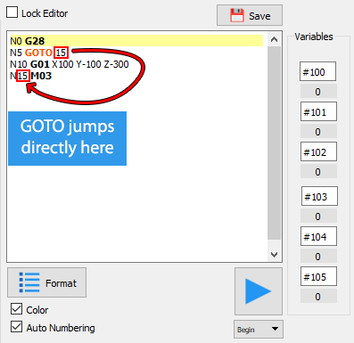
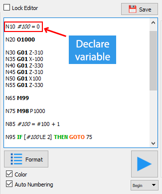
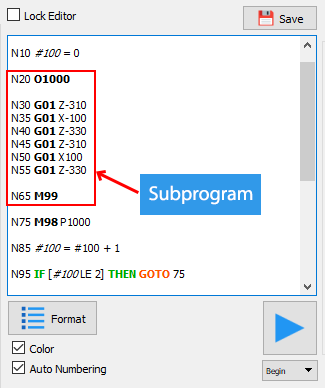
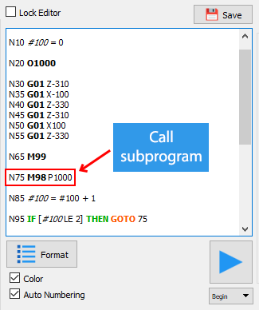

G-CODE MACRO PROGRAMMING¶
GOTO - Jumping Ahead in G-CODE¶
Description¶
GOTO is pretty simple to use, just followed by the sequence number (N number) you would like to jump to.
Example¶

This program snippet uses a GOTO which address is 15 to jump over N10 and go directly to N15
Conditional Expresssions¶
Let’s talk about the rules for Conditional Expressions.
Here are the rules:
- Conditional expressions must be enclosed in square brackets (“[” and “]”).
- A Conditional Expression consists of two operands and a comparison operator.
- An operand may be a # variable or a number.
- There must be a space between a comparison operator and operands.
-
Comparison Operators:
EQ: Equal==: EqualNE: not equal!=: not equalGT: greater than>: greater thanGE: greater than or equal>=: greater than or equalLT: less than<: less thanLE: less than or equal<=: less than or equal
Comparisons may be further grouped with square brackets and AND, OR, or XOR.
Example:¶
[[0 LE #100] AND [#100 LE 1000]]
[[0 < #100] AND [#100 > 1000]] (True if the value of #100 is 0 to 1000)
Math Methods¶
#sin([value])- Compute sine (value is degree)#cos([value])- Compute cosine (value is degree)#cos([value])- Compute cosine (value is degree)#tan([value])- Compute tangent (value is degree)#asin([value])- Compute arc sine(result is degree)#atan([value])- Compute arc tangent (result is degree)#atan2(x, y)- Compute arc tangent with two parameters (result is degree)#abs([value])- Compute absolute value#sqrt([value])- Compute square root#pow([value1],[value2])- Raise to power, ex: #result = #pow(2,3) -----> #result = 8
If conditional Branching¶
While GOTO represents an “unconditional branch” in G-Code execution, IF allows for “conditional branching”.
Usage¶
IF [Conditional Expression] THEN <do somethings>
- If Conditional Expression is true, the G-code will execute the command behind THEN.
- If Conditional Expression is false, the G-code falls through to the next line.
Example¶
IF [#100 GE 200] THEN GOTO 15 ;//if #100 >= 200 then GOTO N15
Variables¶
Description¶
They can be assigned values, and its value could be changed during program execution. When you refer to them, they give back the last value they were assigned.
The syntax for a variable is the pound sign followed by a number up to however many digits your controller supports that identifies the variable.
For example, we can write “#100 = 0” to assign the value “0” to the variable “#100”.
Usage¶

- Global Variables: When a variabel is prefixed with
#GLOBAL_like#GLOBAL_IsRunning, the program of other robots in the project will be able to use that variable. -
System Variables:
#X, #Y, #Z, #W, #U, #V- Current robot position#F, #A, #S, #E- Current robot speed, acceleration, start and end speed#ConveyorSpeed, #ConveyorDirection- Speed and direction of the conveyor#O0_X, #O0_Y, #O0_Z, #O0_W, #O0_H- The position and size of the first object detected by the camera.-
#O[id]_X, #O[id]_Y, #O[id]_Z, #O[id]_W, #O[id]_H - [id]is the order in which the object appears. If the object is deleted, it will have aNULLvalue.- Example:
IF [#O0_X != NULL] THEN G01 X[#O0_X]
-
Robot Input:
#Response- the string is sent from the robot to the software#I[index]- state of input pin atindex- Example:
G28
>>> Ok => #Response = "Ok"
M7 I0
>>> I0 V1 => #Response = "I0 V1", #I0 = 1
M7 I2
>>> I2 V0 => #Response = "I2 V0", #I2 = 0
Subprograms¶
Define a Subprogram¶

The syntax to start a subprogram with the letter O followed by a number. This number is the name of the subprogram.
As the example above, line 20 is the start of a subprogram named 1000. And then, we start programing for the subprogram (from line 30 to 55). To end the subprogram, we use M99 command (line 65).
Call the subprogram¶
To call the subprogram, we use the syntax:
M98 P<name of the subprogram>
Example¶

Execute another G-code file¶
M98 F<file_name>
For example: M98 Fpick_char
pick_charis the name of G-code file.
Function¶
Object Detecting Functions¶
M98 PpauseCamera- Pause reading image frames from the camera.M98 PresumeCamera- Resume reading camera.M98 PcaptureCamera- Capture a frame from camera.M98 PdeleteFirstObject- Delete the first element in the container of the tracking objects.M98 PclearObjects- Clear all tracking objects in container.M98 PsyncConveyor- Synchronize the robot with the conveyor.M98 PstopSyncConveyor- Stop syncing the robot with the conveyor.
Communicate¶
M98 PsendExternalMCU- Send a string to the external microcontroller that is connecting to the software.- Eg:
M98 PsendExternalMCU("Hello World")
- Eg:
Contact Us¶
- Store: https://deltaxstore.com
- Website: https://www.deltaxrobot.com
- Email: deltaxrobot@gmail.com
- Phone: +84 38 875 2005